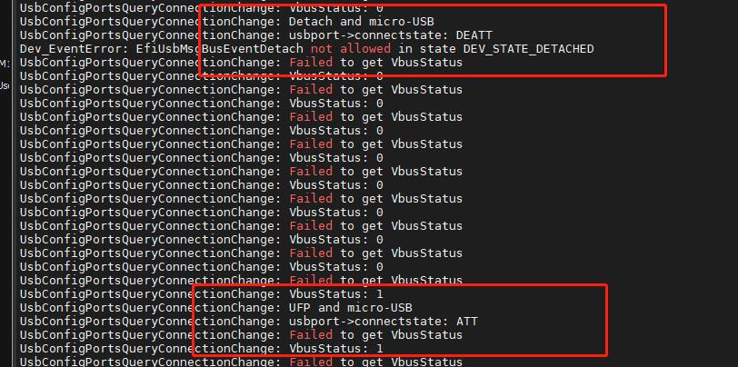

概述
目前usb在fastboot模式下无法识别，跟进一下代码看看什么原因。
USB配置
USB类型
QcomPkg/Include/Protocol/EFIUsbConfig.h:
/** @addtogroup efi_usbConfig_data_types
@{ */
/**
USB core id.
*/
typedef enum {
USB_CORE_0 = 0, /**< Core0. */
USB_CORE_1, /**< Core1. */
USB_CORE_2, /**< Core2. */
USB_CORE_3, /**< Core3. */
USB_CORE_MAX_NUM /**< Invalid Core. */
} QCOM_USB_CORE_NUM;
/**
USB connector type.
*/
typedef enum {
USB_CONNECTOR_TYPE_A = 0, /**< Type-A Connector. */
USB_CONNECTOR_TYPE_C, /**< Type-C Connector. */
USB_CONNECTOR_INVALID /**< Invalid Connector. */
} QCOM_USB_CONNECTOR_TYPE;
/**
USB mode
*/
typedef enum {
/** USB mode type for existing USB Config APIs */
USB_HOST_MODE_EHCI = 0x00000000, /**< host controller supporting EHCI interface */
USB_HOST_MODE_XHCI = 0x00000001, /**< host controller supporting XHCI interface */
USB_DEVICE_MODE_HS = 0x00000002, /**< device controller supporting ChipIdea device mode */
USB_DEVICE_MODE_SS = 0x00000004, /**< device controller supporting SNPS device mode */
/** USB mode type for client to select configuration */
USB_HOST_MODE = 0x00000008, /**< host mode */
USB_DEVICE_MODE = 0x00000010, /**< Device mode */
USB_DUAL_ROLE_MODE = 0x00000020, /**< Dual Role */
/** invalid mode, used for error condition */
USB_INVALID_MODE = 0x00010000, /**< invalid USB mode */
} QCOM_USB_MODE_TYPE;
代码流程
usb驱动入口函数：
QcomPkg/Drivers/UsbConfigDxe/UsbConfigDxe.inf
[Defines]
INF_VERSION = 0x00010005
BASE_NAME = UsbConfigDxe
FILE_GUID = CD823A4D-7DEC-4531-AE5D-4134FA4127B8
MODULE_TYPE = DXE_DRIVER
VERSION_STRING = 1.0
ENTRY_POINT = UsbConfigDriverEntryPoint
usb配置：
QcomPkg/SocPkg/AgattiPkg/LAA/Core.dsc:
# USB
gQcomTokenSpaceGuid.InitUsbControllerOnBoot|FALSE //开机初始化usb
gQcomTokenSpaceGuid.HostModeSupported|FALSE // 开机host模式
gQcomTokenSpaceGuid.USBSmmuStage1Supported|TRUE
# U1U2 enablement results in SS and SSP instability
gQcomTokenSpaceGuid.USBU1U2Supported|FALSE
gQcomTokenSpaceGuid.UsbNoPmic|TRUE //无pmic模式，无usb cc识别，直接配置成device
识别流程如下：
usb配置驱动将启动timer每1s轮询一次usb状态。
* UsbConfigDriverEntryPoint // QcomPkg/Drivers/UsbConfigDxe/UsbConfig.c
└── Status = UsbConfigInit(); // AgattiPkg/Library/UsbConfigLib/UsbConfigLib.c
├── if (!FeaturePcdGet(HostModeSupported)) // Check if host mode is supported in UEFI.
│ └── gUsbConfigDevice[USB_CORE_0_NICOBAR].EnableStaticCfg.UsbMode = USB_DEVICE_MODE_SS; //默认配置成HOST
├── Status = gBS->CreateEvent(EVT_TIMER | EVT_NOTIFY_SIGNAL,TPL_CALLBACK,UsbPortStateChgCb, NULL,&PortStateChgEvt);// Create a timer to poll USB Type-C CC Status
├── gBS->SignalEvent(PortStateChgEvt); //立即出发timer
├── UsbPortStateChgCb // timer的处理函数
│ ├── Status = UsbConfigPortsEventHandler（...）//AgattiPkg/Library/UsbConfigLib/UsbConfigUsbPorts.c
│ │ └── Status = UsbConfigPortsQueryConnectionChange(...)
│ │ ├── if(FeaturePcdGet(UsbNoPmic) //重要如果配置成UsbNoPmic，直接赋值状态Attach，UFP，接下来在HandlePortPartnerXtach继续获取充电类型
│ │ │ └── if (UsbPort->ConnectState == FALSE)
│ │ │ ├── UsbPort->ConnectState = TRUE;
│ │ │ ├── Message = UsbCfgPortMsgPartnerAttach;
│ │ │ ├── Payload->UsbTypeCPortMode = USB_TYPEC_PORT_MODE_UFP;
│ │ │ └── goto ON_EXIT; //直接跳转到出来，下面的都不跑
│ │ ├── Status = gPwrCtrlProtocol->GetHwInfo(&UsbPortHwInfo); //获取硬件信息，看是支持typec还是micro usb
│ │ ├── if( (EFI_SUCCESS == Status) && (UsbPortHwInfo.ConnectorType[0] == EFI_USB_PWR_CTRL_USB_CONNECTOR_TYPE_TYPEC)) //如果硬件支持typec
│ │ │ └── Status = gPwrCtrlProtocol->GetTypeCPortStatus(CoreNum, &UsbPort->PortStatus); //重要，获取typec状态
│ │ │ └── switch (UsbPort->PortStatus.DataRole) //
│ │ │ └── case EFI_USB_PWR_CTRL_TYPEC_DATAROLE_UFP: //UFP连接，一般接电脑会走这
│ │ │ ├── DBG(EFI_D_INFO, "USB Type-C Device Mode(UFP mode)");
│ │ │ ├── Message = UsbCfgPortMsgPartnerAttach;
│ │ │ └── DBG(EFI_D_ERROR, "UFP and Type-C");
│ │ ├── else if(UsbPortHwInfo.ConnectorType[0] == EFI_USB_PWR_CTRL_USB_CONNECTOR_TYPE_uUSB) //支持micro usb
│ │ │ ├── Status = gPwrCtrlProtocol->GetVbusDetectStatus(CoreNum, &VbusStatus); //获取vbus状态
│ │ │ │ └── EFI_UsbPwrCtrl_GetVbusDetectStatus() // Drivers/UsbPwrCtrlDxe/UsbPwrCtrl.c
│ │ │ │ └── UsbPwrCtrlLib_GetVbusDetect(PortIndex, bVbusDetect);
│ │ │ │ └── UsbPwrCtrlLibPmSchg_GetVbusDetect(pUsbPwrCtrlHwInfo->Ports[PortIndex].VbusDetect.HwInfo, bVbusDetect); // QcomPkg/Library/UsbPwrCtrlLib/UsbPwrCtrlLib.c
│ │ │ │ └── PmicSchgProtocol->UsbinValid(HwInfo.ResourceIndex,bVbusDetect);
│ │ │ │ ├── errFlag = pm_schg_usb_irq_status(PmicDeviceIndex, PM_SCHG_USB_IRQ_USBIN_PLUGIN, PM_IRQ_STATUS_RT,(boolean*)&UsbinPlugedIn); //跟到最后还是读取pmic是否有中断信号
│ │ │ │ └── Valid = (UsbinPlugedIn) ? TRUE : FALSE; // Drivers/PmicDxe/PmicSchgProtocol.c
│ │ │ └── if(VbusStatus)
│ │ │ └── if (UsbPort->ConnectState == USBC_STATE_DETACHED)
│ │ │ ├── Message = UsbCfgPortMsgPartnerAttach;
│ │ │ ├── Payload->UsbTypeCPortMode = USB_TYPEC_PORT_MODE_UFP;
│ │ │ └── DBG(EFI_D_ERROR, "UFP and micro-USB");
│ │ └── UsbConfigPortsPrintPortStatus(EFI_D_WARN, UsbPort, *Message, CoreNum); //纯打印
│ └── switch (Message) { case UsbCfgPortMsgPartnerAttach: case UsbCfgPortMsgPartnerDetach: //承接UsbConfigPortsEventHandler函数获取连接状态及主从模式后，继续获取充电类型。
│ └── HandlePortPartnerXtach(Index, Message, Payload.UsbTypeCPortMode);
│ ├── (FeaturePcdGet(UsbNoPmic))//如果配置成UsbNoPmic，这里直接赋值SDP device模式
│ │ ├── ChargerType = EFI_USB_PWR_CTRL_HSUSB_CHGPORT_SDP;
│ │ └── PortMode = USB_TYPEC_PORT_MODE_UFP;
│ └── if (Message == UsbCfgPortMsgPartnerAttach) { //Attach
│ └── if (IS_HARDWARE_CONFIUGRED(gUsbConfigDevice[CoreNum].UsbConfig.modeType))
│ ├── if (IS_USB_PERIPHERAL_MODE(gUsbConfigDevice[CoreNum].UsbConfig.modeType))
│ │ ├── Status = GetChargerPortType(CoreNum, &ChargerType); //BC1.2获取充电类型
│ │ │ ├── Status = gRT->GetVariable(L"UsbfnForceComplianceMode", &gQcomTokenSpaceGuid, NULL, &UefiVarSize, &UefiVar); //BC1.2获取接口
│ │ │ └── if (!EFI_ERROR(Status) && (UefiVar != 0))
│ │ │ └── *ChargerPortType = EFI_USB_PWR_CTRL_HSUSB_CHGPORT_SDP;
│ │ └── if(FeaturePcdGet(UsbNoPmic)) //如果配置成UsbNoPmic，充电类型直接SDP
│ │ └── ChargerType = EFI_USB_PWR_CTRL_HSUSB_CHGPORT_SDP;
│ └── if (FeaturePcdGet(InitUsbControllerOnBoot)) //Pcd配置成启动初始化
│ └── if (gUsbConfigDevice[CoreNum].EnableStaticCfg.Enabled == TRUE && gUsbConfigDevice[USB_CORE_0_NICOBAR].EnableStaticCfg.UsbMode == USB_HOST_MODE_XHCI) //如果默认是host模式，则开始使能usb Controller
│ └── Status = UsbStartController(CoreNum, UsbCfgMode); //使能usb host
├── Status = gBS->SetTimer(PortStateChgEvt,TimerPeriodic,USB_PORT_POLL_INTERVAL);// Set the polling period for the USB Type-C periodic event callback
├── if (!FeaturePcdGet(HostModeSupported)) //Pcd默认配置成host模式为false则配置成device
│ ├── gUsbConfigDevice[USB_CORE_0_NICOBAR].EnableStaticCfg.Enabled = TRUE;
│ └── gUsbConfigDevice[USB_CORE_0_NICOBAR].EnableStaticCfg.UsbMode = USB_DEVICE_MODE_SS;
├── else // // If the user plugs in the host cable during the boot time, configure the USB hardware in the host mode
│ └── Status = UsbPortGetRtConnectionMode(gUsbConfigDevice[USB_CORE_0_NICOBAR].UsbPortHandle, &PortMode, USB_CORE_0_NICOBAR); //检测是否有ota线插入
│ └── if (PortMode == USB_TYPEC_PORT_MODE_DFP)
│ └── gUsbConfigDevice[USB_CORE_0_NICOBAR].UsbCoreInterface->ModeType = USB_HOST_MODE; //默认配置成host模式
└── #define USB_PORT_POLL_INTERVAL (1000 * 1000U) //timer是1s轮询一次
问题分析
1.fastboot模式下不识别USB
由于a6650项目没有接CC脚到pm2250上面，而默认配置的又是typec功能，所有不会触发SNK ATTACH事件，正常开发板接了CC会有以下打印：
连接USB:
connectionUsbConfigPortsQueryConnectionChange: UFP and Type-C
UsbConfigPortsQueryConnectionChange: usbport->connectstate: ATT
断开：
UsbConfigPortsQueryConnectionChange: Detach and Type-C
UsbConfigPortsQueryConnectionChange: usbport->connectstate: DEATT
1.尝试配置成micro usb
直接在获取状态时强制修改成EFI_USB_PWR_CTRL_USB_CONNECTOR_TYPE_uUSB，修改如下：
UsbConfigPortsQueryConnectionChange(
IN QCOM_USB_PORT *UsbPort,
OUT USB_CFG_PORT_MESSAGE *Message,
IN OUT UINTN *PayloadSize,
OUT USB_TYPEC_PORT_MESSAGE_PAYLOAD *Payload,
IN UINT8 CoreNum
)
{
Status = gPwrCtrlProtocol->GetHwInfo(&UsbPortHwInfo);
UsbPortHwInfo.ConnectorType[0] = EFI_USB_PWR_CTRL_USB_CONNECTOR_TYPE_uUSB;//wugn add
if( (EFI_SUCCESS == Status) && (UsbPortHwInfo.ConnectorType[0] == EFI_USB_PWR_CTRL_USB_CONNECTOR_TYPE_TYPEC))
{
}
else if(UsbPortHwInfo.ConnectorType[0] == EFI_USB_PWR_CTRL_USB_CONNECTOR_TYPE_uUSB) {
Status = gPwrCtrlProtocol->GetVbusDetectStatus(CoreNum, &VbusStatus);
// DBG(EFI_D_ERROR,"Failed to get VbusStatus");
//DBG(EFI_D_ERROR, "VbusStatus: %d", VbusStatus);
if(VbusStatus)
{
if (UsbPort->ConnectState == USBC_STATE_ATTACHED)
goto ON_EXIT;
if (UsbPort->ConnectState == USBC_STATE_DETACHED) {
*Message = UsbCfgPortMsgPartnerAttach;
*PayloadSize = sizeof(USB_TYPEC_PORT_MODE);
DBG(EFI_D_ERROR, "UFP and micro-USB");
Payload->UsbTypeCPortMode = USB_TYPEC_PORT_MODE_UFP;
UsbPort->PortStatus.DataRole = EFI_USB_PWR_CTRL_TYPEC_DATAROLE_UFP;
}
}
else
{
DBG(EFI_D_INFO, "Vbus FALSE %d", UsbPort->ConnectState);
if (UsbPort->ConnectState == USBC_STATE_DETACHED)
goto ON_EXIT;
if (UsbPort->ConnectState == USBC_STATE_ATTACHED) {
*Message = UsbCfgPortMsgPartnerDetach;
*PayloadSize = sizeof(USB_TYPEC_PORT_MODE);
DBG(EFI_D_ERROR, "Detach and micro-USB");
Payload->UsbTypeCPortMode = USB_TYPEC_PORT_MODE_INVALID;
UsbPort->PortStatus.DataRole = EFI_USB_PWR_CTRL_TYPEC_DATAROLE_UNKNOWN;
}
}
}
}
能正常检测到vbus和连接状态，但就是没法识别usb，打印如下： 
我还以是bc1.2检测出错了。
2.直接配置UsbNoPmic
目前XBL中有UsbNoPmic配置，意思是不带pmic直接配置成device模式，检索如下：
wugn@jcrj-tf-compile:boot_images$ ack UsbNoPmic QcomPkg/SocPkg/AgattiPkg/
QcomPkg/SocPkg/AgattiPkg/LAA/Core.dsc
816: gQcomTokenSpaceGuid.UsbNoPmic|TRUE
QcomPkg/SocPkg/AgattiPkg/Library/UsbConfigLib/UsbConfigLib.inf
100: gQcomTokenSpaceGuid.UsbNoPmic
QcomPkg/SocPkg/AgattiPkg/Library/UsbConfigLib/UsbConfigUsbPorts.c
210: if(FeaturePcdGet(UsbNoPmic) ||
QcomPkg/SocPkg/AgattiPkg/Library/UsbConfigLib/UsbConfigLib.c
1183: (FeaturePcdGet(UsbNoPmic)) ||
1231: if(FeaturePcdGet(UsbNoPmic)) {
获取状态直接赋值并跳过CC检测：
QcomPkg/SocPkg/AgattiPkg/Library/UsbConfigLib/UsbConfigUsbPorts.c：
UsbConfigPortsQueryConnectionChange(
IN QCOM_USB_PORT *UsbPort,
OUT USB_CFG_PORT_MESSAGE *Message,
IN OUT UINTN *PayloadSize,
OUT USB_TYPEC_PORT_MESSAGE_PAYLOAD *Payload,
IN UINT8 CoreNum
)
{
BOOLEAN VbusStatus = FALSE;
EFI_STATUS Status = EFI_SUCCESS;
//Initialize Message value to UsbCfgPortMsgNone
*Message = UsbCfgPortMsgNone;
// Since there is no Type-C support for Pre-SI,
// assume port in UFP mode and it is always attached.
if(FeaturePcdGet(UsbNoPmic) ||
(PlatformInfo.platform == EFI_PLATFORMINFO_TYPE_RUMI) ||
(PlatformInfo.platform == EFI_PLATFORMINFO_TYPE_VIRTIO) ||
(PlatformInfo.platform == EFI_PLATFORMINFO_TYPE_ADP) ||
(PlatformInfo.platform == EFI_PLATFORMINFO_TYPE_UNKNOWN)) {
DBG(EFI_D_VERBOSE, "Pre-SI: Assume UFP and attached");
if (UsbPort->ConnectState == FALSE) {
UsbPort->ConnectState = TRUE;
*Message = UsbCfgPortMsgPartnerAttach;
*PayloadSize = sizeof(USB_TYPEC_PORT_MODE);
Payload->UsbTypeCPortMode = USB_TYPEC_PORT_MODE_UFP;
// set to CC1 for RUMI
UsbPort->PortStatus.CCOrientation = EFI_USB_PWR_CTRL_TYPEC_ORIENTATION_CC1;
}
goto ON_EXIT;
}
直接跳过bc1.2检测，赋值充电类型为SDP。
HandlePortPartnerXtach(
IN QCOM_USB_CORE_NUM CoreNum,
IN USB_CFG_PORT_MESSAGE Message,
IN USB_TYPEC_PORT_MODE PortMode)
{
EFI_STATUS Status = EFI_SUCCESS;
QCOM_USB_CORE_INTERFACE *UsbCoreIfc;
QCOM_USB_MODE_TYPE UsbCfgMode;
EFI_USB_PWR_CTRL_HSUSB_CHGPORT_TYPE ChargerType = EFI_USB_PWR_CTRL_HSUSB_CHGPORT_INVALID;;
FNC_ENTER_MSG();
// Set the charger type to SDP for RUMI
if ( (PlatformInfo.platform == EFI_PLATFORMINFO_TYPE_RUMI) ||
(FeaturePcdGet(UsbNoPmic)) ||
(PlatformInfo.platform == EFI_PLATFORMINFO_TYPE_ADP) ) {
DBG(EFI_D_INFO, "Set Charger Type to SDP for RUMI");
ChargerType = EFI_USB_PWR_CTRL_HSUSB_CHGPORT_SDP;
PortMode = USB_TYPEC_PORT_MODE_UFP;
}
if(FeaturePcdGet(UsbNoPmic)) {
ChargerType = EFI_USB_PWR_CTRL_HSUSB_CHGPORT_SDP;
}